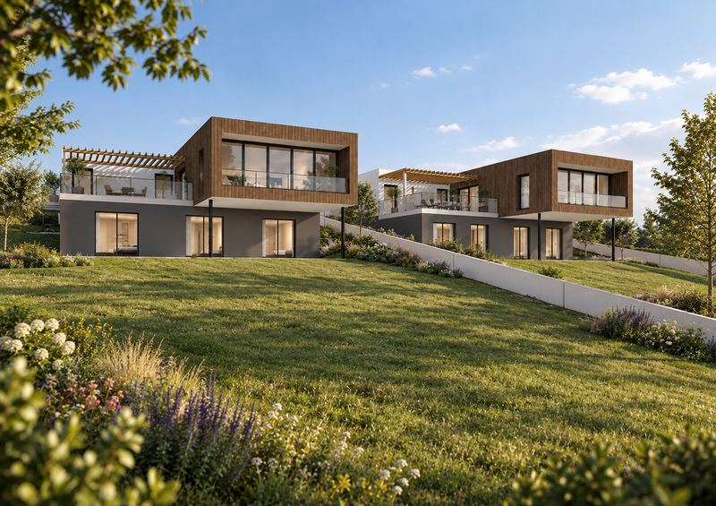
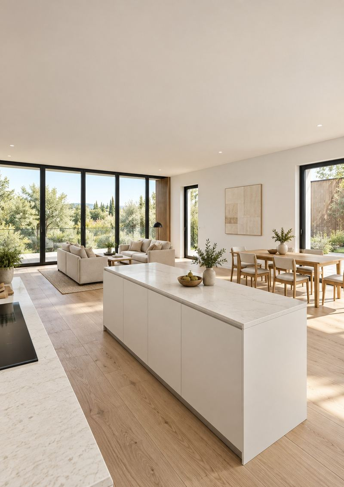
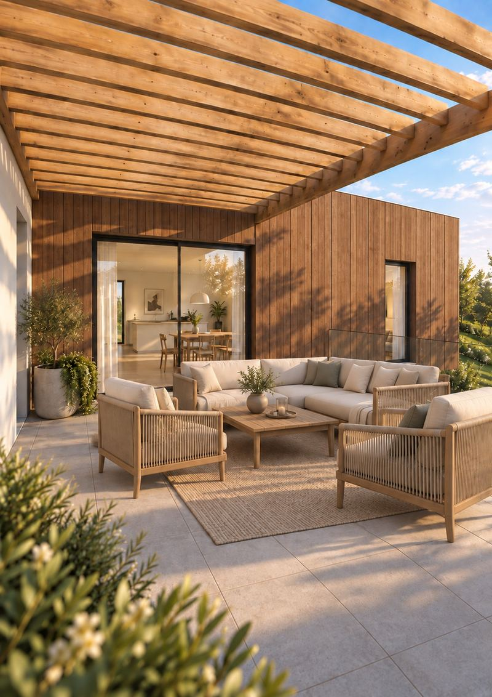
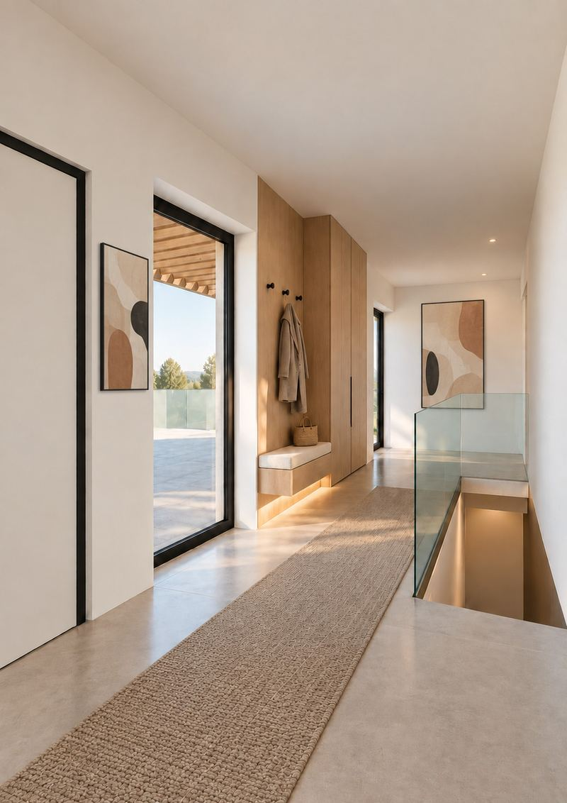
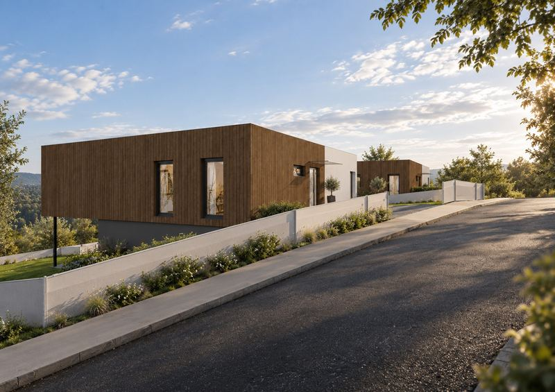
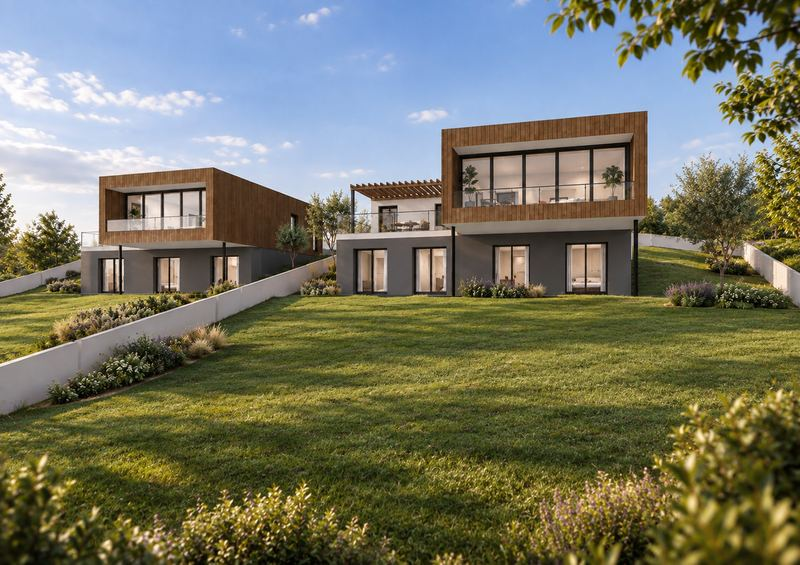

Wohnen mit Weitblick.
Im Wienerwald zuhause.
Zwei freistehende Einfamilienhäuser in Mauerbach, je 187 m² auf zwei Ebenen, jedes auf einem eigenen Bauplatz mit rund 950 m². Lärchenholz, drei Terrassen, Wärmepumpe. Die Wiener Stadtgrenze liegt rund 1 km entfernt.

Oben der Blick ins Grüne. Unten der eigene Garten.
In der Berggasse in Mauerbach entstehen zwei freistehende Einfamilienhäuser auf zwei eigenen Bauplätzen, am Rand des Wienerwalds und mit Wien in Reichweite.
Oben, auf Straßenniveau, liegt das Erdgeschoss mit Wohnen, Küche, Essen und Büro, verkleidet mit Lärchenholz und mit großer Terrasse unter der Holzpergola. Eine Ebene tiefer liegen die Zimmer, ebenerdig zum Garten, mit eigener und überdachter Terrasse.
Flächen laut Vorentwurf vom 09.09.2026, Nutzfläche ohne Terrassen. Kaufpreis, Pläne und Energieausweis auf Anfrage beim Vertrieb.



Weitblick oben. Garten unten.
Das Erdgeschoss trägt eine hinterlüftete Fassade aus Lärchenholz, das Gartengeschoss darunter ist verputzt und öffnet sich mit großen Glasflächen zur Wiese. Von der Straße wirken die Häuser niedrig und ruhig, zum Garten hin großzügig und hell.
Finden Sie Ihr Haus.
Beide Häuser im Überblick, mit Flächen je Ebene, Terrassen und Bauplatz. Öffnen Sie ein Haus für alle Details und Ihre Anfrage.
| Haus | Zimmer | Nutzfläche | Bauplatz | Terrassen | Kaufpreis | Status | Details |
|---|---|---|---|---|---|---|---|
| Haus 1 | 6 | 187,20m² | 950m² | 92,40m² | Auf Anfrage | In Planung | |
| Haus 2 | 5 | 187,20m² | 930m² | 92,40m² | Auf Anfrage | In Planung |

Mitten im Wienerwald. Und Wien gleich nebenan.
Steinbach ist ein Ortsteil von Mauerbach in den Hügeln des Wienerwalds. Bis zur Wiener Stadtgrenze sind es rund 1 km, ins Ortszentrum mit Supermarkt, Apotheke, Volksschule und Gemeindeamt rund 2 km.
- 170m Bus Steinbach Berggasse zu Fuß Die nächste Haltestelle liegt in der Steinbachstraße, gleich unterhalb der Berggasse.
- 1,1km Trollwiese, Wien 14 Wiener Stadtgrenze Hier beginnt der 14. Bezirk: Penzing mit Hadersdorf und Hütteldorf.
- 1,9km Kartause Mauerbach mit dem Rad Ehemaliges Kartäuserkloster, gegründet 1314, das historische Herz von Mauerbach.
- 1,9km Hohe-Wand-Wiese mit dem Rad Freizeitwiese im Wienerwald mit Schlepplift und Bike-Trail, schon auf Wiener Boden.
- 2,0km Ortszentrum Mauerbach mit dem Rad Supermarkt, Volksschule und Gemeindeamt an der Hauptstraße, die Apotheke etwas näher.
- 2,7km Sophienalpe zu Fuß oder mit dem Rad Ausflugsziel im Wienerwald, Ausgangspunkt für Wanderwege über die Hügel.
- 4,8km Auhof Center und A1 mit dem Auto Einkaufszentrum mit Supermärkten und Apotheke, daneben die Auffahrt zur Westautobahn.
- 7,4km U4 Hütteldorf mit Auto oder Bus Endstation der U4 und Knoten für S-Bahn und Regionalzüge.
- 14km Stephansdom mit Auto oder Öffis Die Innere Stadt, über Hütteldorf und die Westeinfahrt.
Alltag im Ort, Wien in Reichweite.
Bus vor der Tür, Kindergarten, Volksschule und Supermarkt im Ortszentrum, Auhof Center und Westautobahn rund 5 km entfernt.
Mobilität
- Bushaltestelle170 m
- Wiener Stadtgrenze1.150 m
- Bahnhof Unter Purkersdorf4.370 m
- Autobahn A1, Auhof5.150 m
- U-Bahn, U47.430 m
Nahversorgung
- Apotheke1.520 m
- Supermarkt2.000 m
- Gemeindeamt2.040 m
- Auhof Center4.750 m
Kinder und Schulen
- Spielplatz1.175 m
- Kindergarten1.625 m
- Volksschule2.010 m
- Mittelschule4.740 m
Natur und Freizeit
- Kartause Mauerbach1.910 m
- Hohe-Wand-Wiese1.920 m
- Sophienalpe2.710 m
- Exelberg3.815 m
Entfernungen Luftlinie ab Berggasse 17, Quelle OpenStreetMap, gerundet.
Zwei Häuser, zwei Bauplätze. Unterlagen jetzt anfragen.
Zum Hausfinder
Wohnen auf Straßenniveau.
Eingang mit Garderobe, Wohnbereich mit Küche und Essplatz, Büro und WC. Bodentiefe Verglasungen führen auf die Terrasse unter der Holzpergola.
- Wohnen31,35 m²
- Küche, Essen25,90 m²
- Büro10,36 m²
- Eingang, Garderobe, WC21,86 m²
Zimmer zum Garten.
Haus 1 mit vier Zimmern, Bad und Duschbad, Haus 2 mit drei Zimmern und je einem eigenen Duschbad. Dazu Keller und Technikraum.
- Haus 1, vier Zimmer11,86 bis 16,87 m²
- Haus 2, drei Zimmer15,31 bis 15,65 m²
- Keller und Technikraumin beiden Häusern
Draußen auf zwei Ebenen.
Oben die große Terrasse unter der Holzpergola, unten eine offene und eine überdachte Terrasse direkt an der Wiese. Zusammen 92,40 m² je Haus.
- Erdgeschoss, mit Pergola36,40 m²
- Gartengeschoss26,00 m²
- Gartengeschoss, überdacht30,00 m²
Räume, die nach draußen führen.
Visualisierungen, Möblierung unverbindlich.
950 m² Grund. Für ein Haus.
Jedes Haus steht auf einem eigenen Bauplatz: Haus 1 auf rund 950 m², Haus 2 auf rund 930 m². Bebaut sind davon im Erdgeschoss 163,5 m², weniger als ein Fünftel.
Kein Doppelhaus und keine Reihe, sondern zwei freistehende Häuser mit Abstand zueinander. Die Häuser stehen leicht erhöht über ihrem Garten, das Gartengeschoss öffnet sich direkt auf die Wiese. Platz für Spiel, Beete oder einfach Ruhe.
- Bauplatz Haus 1
- 950m²
- Bauplatz Haus 2
- 930m²
- Bebaut, EG
- 163,5m²
Gebaut mit Lärche, Ziegel und Glas.
Laut Bau- und Ausstattungsbeschreibung vom Oktober 2026, Planung EUROPROJECT ZT GmbH. Details können sich im Zuge der Ausführungsplanung ändern.
Lärche und Ziegel
Erdgeschoss aus Hochlochziegeln mit 16 cm Wärmedämmung und hinterlüfteter Brettfassade aus Lärchenholz mit Vergrauungsanstrich. Gartengeschoss in Stahlbeton, gedämmt und in Grau verputzt.
Glas und Licht
Holz-Alu-Fenster mit 3-fach-Verglasung, bodentiefe Verglasungen und Schiebetüren zu den Terrassen. Alle Fenster mit elektrischen Außenjalousien.
Wärme und Strom
Luft-Wasser-Wärmepumpe mit Fußbodenheizung. Auf dem extensiv begrünten Flachdach ist eine Photovoltaikanlage mit rund 10 bis 12 kWp je Haus vorgesehen.
Böden und Bäder
Landhausdielen in Eiche rustikal, geölt, in Wohnräumen und Zimmern. Feinsteinzeug 60 × 60 cm in Vorraum, Bad und Technik. Sanitär von Laufen, Grohe und Geberit, bodenebene Duschen mit Glastrennwand.
Drei Terrassen
36,40 m² im Erdgeschoss unter der Sonnenschutz-Pergola aus Holz, im Gartengeschoss 26,00 m² und 30,00 m² überdacht. Glasbrüstungen und frostsicherer Wasseranschluss.
Sicherheit
Einbruchhemmende Hauseingangstür in WK 3, alle Fenster und Fenstertüren im Erdgeschoss ebenfalls in WK 3 mit versperrbaren Griffen. Glasvordach über dem Eingang.
Wärmepumpe, Photovoltaik, begrüntes Dach.
Geheizt wird mit einer Luft-Wasser-Wärmepumpe über die Fußbodenheizung, am Flachdach ist eine Photovoltaikanlage vorgesehen. Der Energieausweis wird nachgereicht.
- HWB, Planungswert
- 24 bis 27kWh/m²a
- fGEE, Planungswert
- 0,50 bis 0,56
- Photovoltaik je Haus
- 10 bis 12kWp
Werte laut energetischer Vorabschätzung des Planers vom 06.10.2026, kein Energieausweis.
Welches Haus passt zu Ihnen? Flächen und Anfrage.
Zum HausfinderHäufige Fragen.
Die wichtigsten Antworten zu Lage, Flächen, Grund, Bauweise und Anfrage auf einen Blick.
Wo liegt das Projekt Am Steinbach?
In der Berggasse 17-19 in 3001 Mauerbach, im Ortsteil Steinbach am Wienerwald, westlich von Wien. Die Bushaltestelle Steinbach Berggasse ist rund 170 m entfernt, die Wiener Stadtgrenze bei der Trollwiese im 14. Bezirk rund 1,1 km, das Auhof Center mit der Westautobahn A1 rund 4,8 km und die U4 in Hütteldorf rund 7,4 km (Luftlinie).
Wie viele Häuser gibt es und wie groß sind sie?
Es entstehen zwei freistehende Einfamilienhäuser auf zwei eigenen Bauplätzen: Haus 1 auf rund 950 m², Haus 2 auf rund 930 m². Jedes Haus hat laut Vorentwurf 187,20 m² Nutzfläche auf zwei Ebenen, davon 89,47 m² im Erdgeschoss und 97,73 m² im Gartengeschoss.
Wie sind die Häuser aufgeteilt?
Das Erdgeschoss ist bei beiden Häusern gleich: Eingang mit Garderobe, Wohnen mit 31,35 m², Küche und Essen mit 25,90 m², Büro mit 10,36 m² und WC, dazu die Terrasse mit 36,40 m². Im Gartengeschoss hat Haus 1 vier Zimmer, ein Bad, ein Duschbad und ein WC, Haus 2 drei Zimmer mit je rund 15 m² und je einem eigenen Duschbad. Keller und Technikraum sind in beiden Häusern vorhanden.
Welche Freiflächen gibt es?
Jedes Haus hat drei Terrassen: 36,40 m² im Erdgeschoss mit Holzpergola, 26,00 m² und eine überdachte Terrasse mit 30,00 m² im Gartengeschoss. Dazu kommt der Garten auf dem eigenen Bauplatz mit rund 930 bzw. 950 m². Bebaut sind davon im Erdgeschoss 163,5 m², also weniger als ein Fünftel.
Was kostet ein Haus?
Die Kaufpreise nennt Ihnen der Vertrieb, Marcus Weiss, powered by UNIO, gerne persönlich. Am schnellsten fragen Sie das gewünschte Haus direkt im Hausfinder auf dieser Seite an.
Wann sind die Häuser bezugsfertig?
Die Häuser sind in Planung, aktuell liegt der Vorentwurf vom 09.09.2026 vor. Den Zeitplan für Einreichung, Bau und Übergabe erhalten Sie mit Ihrer Anfrage vom Vertrieb.
Wie werden die Häuser gebaut?
Das Erdgeschoss entsteht aus Hochlochziegeln mit 16 cm Wärmedämmung und einer hinterlüfteten Fassade aus Lärchenholz, das Gartengeschoss in Stahlbeton mit Wärmedämmung und Putz. Den Abschluss bildet ein extensiv begrüntes Flachdach. Fenster und Schiebetüren sind in Holz-Alu mit 3-fach-Verglasung geplant.
Wie wird geheizt und wie energieeffizient sind die Häuser?
Geplant sind eine Luft-Wasser-Wärmepumpe mit Fußbodenheizung und eine Photovoltaikanlage am Flachdach mit rund 10 bis 12 kWp je Haus. Der Energieausweis wird nachgereicht. Die energetische Vorabschätzung des Planers vom 06.10.2026 nennt einen Heizwärmebedarf von ca. 24 bis 27 kWh/m²a und einen fGEE von ca. 0,50 bis 0,56. Das sind Planungswerte, kein Energieausweis.
Welche Ausstattung ist vorgesehen?
Laut Bau- und Ausstattungsbeschreibung: Landhausdielen in Eiche rustikal, geölt, in Wohnräumen und Zimmern, Feinsteinzeug im Format 60 × 60 cm in Vorraum, Bad und Technik, Sanitär von Laufen, Grohe und Geberit mit bodenebenen Duschen, elektrische Außenjalousien, Glasbrüstungen und eine Hauseingangstür in Widerstandsklasse WK 3.
Wie komme ich von Mauerbach nach Wien?
Die Bushaltestelle Steinbach Berggasse liegt rund 170 m vom Haus entfernt. Bis zur Wiener Stadtgrenze bei der Trollwiese sind es rund 1,1 km, bis zum Auhof Center und zur Auffahrt auf die Westautobahn A1 rund 5 km und bis zur U4-Endstation Hütteldorf rund 7,4 km, jeweils Luftlinie.
Wer verkauft die Häuser und wie frage ich an?
Der Verkauf erfolgt durch Marcus Weiss, powered by UNIO. Am schnellsten fragen Sie das gewünschte Haus direkt im Hausfinder auf dieser Seite an: Sie erhalten Pläne, Kaufpreis und Zeitplan persönlich.